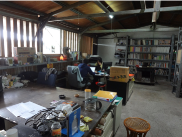

繁｜English｜Español
繁｜English｜Español
长年致力于生态农房研发与建设工作，秉持「可持续」的理念，结合科学方法，深刻地将「社会」 、「文化」、「经济」条件融入，以就地取材、低成本、适用技术以及建立开放式构造体系的作为， 降低成本与技术门坎，让农民也能参与符合绿色环保、节能减碳的现代化家屋兴建。先后完成台湾921 地震灾后原住民部落300余户重建、四川512地震汶川、茂县、青川等地500余户农房重建，台湾88水 灾原住民部落1000余户重建，西藏牧民定居房等多项工作。2004年「永续建筑架构下的原住民部落重建」 入选联合国最佳人居环境案例。2011年获美国Curry Stone Design Prize首奖。
淡江大学建筑系学士, 1977
四川芦山地震重建，2013～迄今
香港大学客座教授，2013
中国美术学院客座教授，2012
云南彝良地震重建，2012
台湾八八水灾灾区原住民家屋重建, 2009～迄今
四川五一二灾区农房重建, 2008
安徽南塘合作社农村合作建房，2007
河南兰考农村合作建房，2006
新竹县尖石天湖部落迁村，2006
受美国麻省理工学院及哥伦比亚大学邀请发表专题演讲, 2006
河北定州市晏阳初乡村建设学院乡村建筑工作室主持, 2005
赴印度尼西亚亚齐南亚海啸灾区，提供家屋重建方案, 2005
台湾921地震灾区重建, 1999-2006
逢甲大学建筑系兼任讲师, 2002
树德科技大学大学建古系兼任讲师, 2001
中原大学建筑系兼任讲师, 1998
谢英俊建筑师事务所主持, 1984
陈其宽建筑师事务所工程师, 1979
陆军建筑工程官, 1977
中华年度文化人物，2012
(台湾)国家文艺奖，2012
深圳保障房设计竞赛──万人家设计规划金奖，2011. 12（人民的城市）
台湾建筑奖, 2011
美国Curry Stone Design Prize, 2011
第10届杰出建筑师公共服务贡献奖, 2008
中国传媒奖组委会特别奖, 2008
第十二届台北市文化奖, 2008
利氏学舍第二届《人籁》月刊生命永续奖, , 2008
台湾六堆客家文化园区竞图首奖, 2006
深圳城市\建筑双年展组委员会特别奖, 2006
侯金堆文教基金会环境保护杰出荣誉奖, 2005
入选联合国最佳人居环境项目 (UN-HABITAT's Best Practice) , 2005---「永续建筑架构下的原住民部落重建」(Aboriginal Community Reconstruction in the Concept of “Sustainable Construction”)
台湾建筑奖社会服务贡献奖, 2003
台湾921重建委员会重建贡献奖, 2002
第三届远东杰出建筑设计佳作奖, 2001
新竹科学工业园区标准厂房公共工程质量评鉴优等
美浓客家文物馆竞图首奖, 1998
台湾建筑师杂志奖(台湾建筑奖), 1997
台湾省政府优良建筑师奖, 1996
台湾公共工程质量特优奖, 1996
新竹县文化中心竞图首奖, 1995
汉堡IBA国际建筑展，2013
维也纳MAK美术馆建筑展Eastern Promises，2013
凤甲美术馆「进步的忧郁」展，台北，2012
利物浦当代艺术双年展，2012
「人民的城市」展，台北，2012
「人民的建筑」北京、深圳、香港、上海、杭州巡回展，2011
世界设计大展，台北，2011
成都双年展艺术类，2011
「朗读违章」王澍 × 谢英俊 建筑展，2011
第53届威尼斯双年展返台展，2010
深圳城市/建筑双年展，2009
第53届威尼斯当代艺术双年展, 2009
加拿大多伦多大学设计展 (Detours: tactical approaches to urbanization in China), 2006
威尼斯建筑艺术双年展, 2006
深圳城市/建筑双年展, 2005
台北当代艺术馆《黏菌城市》展, 2003
常民建筑团队包括谢英俊建筑师事务所(台湾)、达文营造股份有限公司(台湾)、北京常民世纪科技有限公司、成都常民世纪建筑科技有限公司、新津常民建筑科技有限公司。1999年开始，致力于农村及民族地区轻钢系统生态农房的研发与推广工作。其宗旨是为改善乡村的基础设施与人文环境，实现节能型社会于可持续发展的目标。
常民建筑先后承接并完成台湾921地震原住民部落灾后重建；河南兰考农村合作建房地球屋；四川512汶川地震灾后村落重建；西藏纳木错牧民安居项目；台湾88水灾重建等项目。
成果获国内外关注与肯定，2004年入选联合国最佳人居环境案例，2008年受邀参加威尼斯建筑双年展，同年荣获中国建筑传媒奖组委会特别奖2011年荣获美国curry stone设计首奖与台湾建筑奖，2012年台湾文艺最高奖、杰出建筑师奖、文化中国年度人物大奖。
成都办公室
电 话 : +86 28 82411366
+86 28 82491622
地 址：四川省成都市高新區天府三街69號新希望國際B棟1618室
电子邮箱：rastudio@126.com
网址：www.atelier-3.com.cn
台北办公室
电 话 : +886 4 25269611
传 真：+886 4 25269670
地 址：台中市豐原區合作街132巷7號
hsiehyingchun@gmail.com
网址：www.atelier-3.com.（旧网站）
www.hsieh-ying-chun.com（新网站）
日月潭办公室
地 址：南投縣魚池鄉日月村伊達卲路40號
